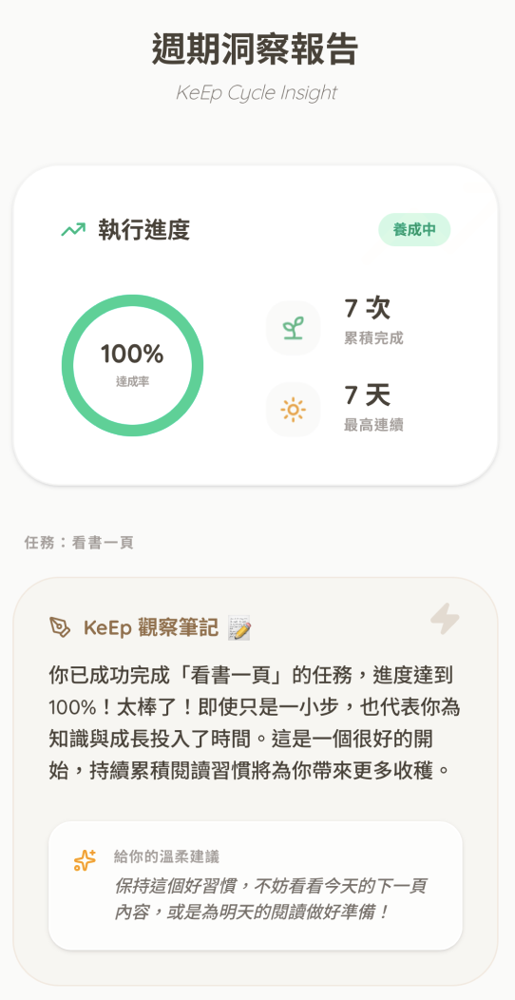

見證堅持的力量， 看見習慣的生命力。
Witness Action, Feel Vitality.
每一次實踐都是養分。我們結合北歐極簡美學與植物成長系統，
讓你的堅持從第 7 次發芽到第 30 次綻放，收納每一份自律的足跡。
Every practice is nourishment. We blend Nordic aesthetics with plant growth systems. Watch your habits sprout at the 7th and bloom at the 30th practice.

視覺化成長模型
Visual Growth Model

TIMES 0
種子
Seed
TIMES 7
發芽
Sprout
TIMES 14
成長
Grow

TIMES 21
花苞
Internalize
TIMES 30
綻放
Bloom
見證每一次實踐的力量
Witness the power of every practice.
獨創「任務日連續」邏輯，無論是週末限定或是週間規律，只要在約定的日子完成，你的成長紀錄便能持續累積而不中斷。
Our unique "Task-Day Streak" logic ensures your record grows as long as you fulfill commitments on your scheduled days—be it weekends or weekdays.


三階挑戰與 AI 週期報告
3-Tier Sprints & AI Reports
內建 7/21/30 天目標框架，協助你逐步內化習慣。
在關鍵時刻，AI
將彙整數據提供量化的溫暖建議，並透過數位集章冊收納每一份自律的足跡。
Built with 7/21/30 day frameworks to help internalize habits. AI analyzes your data at milestones to offer warm, quantified insights, all archived in your digital stamp book.